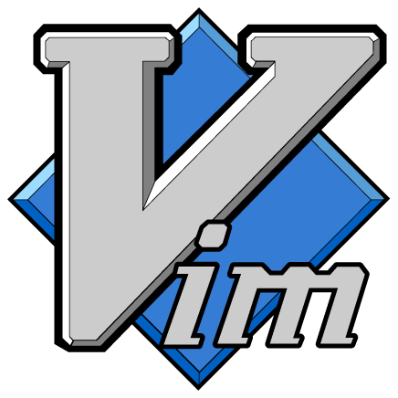
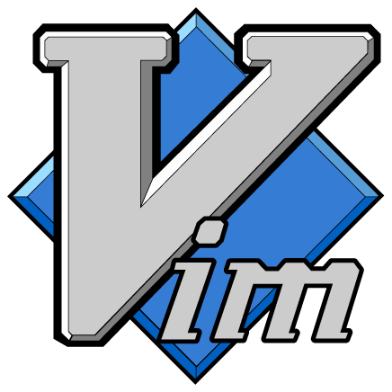

About Me
- Frontend software engineer specializing in React & Flutter
- BSc in Computer Science from the University of Lethbridge
- Living in Florianópolis, Brasil 🌴
- Born in Canada, half-Canadian 🍁 & half-Brazilian 🏖️
- My passion for programming comes from it's infinite creativity and ability to create something out of nothing that can help people
- Big fan of open-source transparent software
- Terry Davis is my programming idol ~ "An idiot admires complexity, a genius admires simplicity"
Professional Experience
Doutor-IE | November 2023 - Present
Contact Information
E-Mail: antonkoetzler-faust@hotmail.com
Phone: +55 (48) 98818-9095
My Toolbox


 



Projects
Flutter
MyoroFitness
- Tracks calories, weight, & exercise
- Keeps the user motivated by having a streak functionality
- Using the USDA food API to get information about foods
MyoroBetTracker
- Simple bet tracker
- Displays a summary of the user's betting results
MyoroFinanceTracker
- Tracks expenses, automates itself by adding your income, and sets goals
- Also a data analysis application of your finances and habits
MyoroStreaks
- Add habits you want to beat
- User may view time since they placed the streak, times resetted, & add observations
Web Development & JavaScript
MyoroPlayer
- Cross-platform desktop application to listen and stream music from YouTube and SoundCloud
- Can download songs from YouTube and SoundCloud
- Techstack: React, Electron, & SQLite
MyoroEditor
- A simple text editor
- Made with NeutralinoJS
XAMPP Social Media Site
- The classic XAMPP social media mock application
- Tech stack: HTML/CSS/JS, PHP, SQL, & Apache
C++ & Python
SoundCloud & YouTube to MP3
- Python script to download song(s) from YouTube or SoundCloud
wxWidgets Learning Repository
- A guide with many PDF tutorials to learn about wxWidgets
wxChess
- A chess app made with wxWidgets